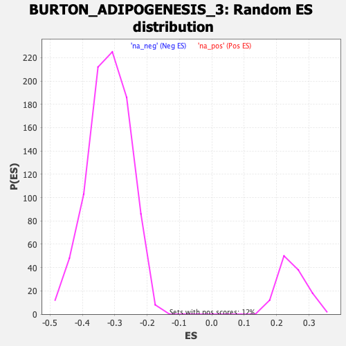

| | | Dataset | DE_genes2 |
| Phenotype | NoPhenotypeAvailable |
| Upregulated in class | na_neg |
| GeneSet | BURTON_ADIPOGENESIS_3 |
| Enrichment Score (ES) | -0.7627369 |
| Normalized Enrichment Score (NES) | -2.39366 |
| Nominal p-value | 0.0 |
| FDR q-value | 0.0 |
| FWER p-Value | 0.0 |
Table: GSEA Results Summary
 Fig 1: Enrichment plot: BURTON_ADIPOGENESIS_3
Fig 1: Enrichment plot: BURTON_ADIPOGENESIS_3
Profile of the Running ES Score & Positions of GeneSet Members on the Rank Ordered List
| PROBE | GENE SYMBOL | GENE_TITLE | RANK IN GENE LIST | RANK METRIC SCORE | RUNNING ES | CORE ENRICHMENT | | 1 | TUBB6 | | | 756 | 3.109 | -0.0375 | No |
| 2 | GAS6 | | | 826 | 2.997 | -0.0335 | No |
| 3 | VCAN | | | 1131 | 2.567 | -0.0450 | No |
| 4 | LMO4 | | | 1364 | 2.299 | -0.0528 | No |
| 5 | CX3CL1 | | | 2246 | 1.590 | -0.1021 | No |
| 6 | CD4 | | | 2889 | 1.247 | -0.1377 | No |
| 7 | WNT4 | | | 3826 | 0.888 | -0.1922 | No |
| 8 | ABCA1 | | | 4776 | 0.620 | -0.2483 | No |
| 9 | AQP1 | | | 5612 | 0.424 | -0.2979 | No |
| 10 | ADAM8 | | | 5635 | 0.419 | -0.2981 | No |
| 11 | SLCO3A1 | | | 6007 | 0.345 | -0.3197 | No |
| 12 | OSMR | | | 6089 | 0.328 | -0.3237 | No |
| 13 | TCF19 | | | 7598 | 0.049 | -0.4153 | No |
| 14 | PNP | | | 7676 | 0.037 | -0.4199 | No |
| 15 | LRP5 | | | 7854 | 0.010 | -0.4306 | No |
| 16 | ATF6B | | | 8035 | -0.017 | -0.4415 | No |
| 17 | IL13RA1 | | | 8101 | -0.027 | -0.4454 | No |
| 18 | ILF2 | | | 8387 | -0.074 | -0.4626 | No |
| 19 | CSTF2 | | | 9445 | -0.302 | -0.5260 | No |
| 20 | KLF5 | | | 9685 | -0.365 | -0.5396 | No |
| 21 | RNASEH2C | | | 9969 | -0.449 | -0.5555 | No |
| 22 | NUP85 | | | 10541 | -0.640 | -0.5885 | No |
| 23 | DTYMK | | | 12442 | -1.447 | -0.7001 | No |
| 24 | E2F8 | | | 12689 | -1.584 | -0.7108 | No |
| 25 | DNMT1 | | | 12826 | -1.669 | -0.7145 | No |
| 26 | RRM1 | | | 13038 | -1.791 | -0.7224 | No |
| 27 | KIF22 | | | 13043 | -1.792 | -0.7178 | No |
| 28 | MCM3 | | | 13783 | -2.315 | -0.7564 | Yes |
| 29 | MCM5 | | | 13861 | -2.378 | -0.7546 | Yes |
| 30 | FEN1 | | | 13911 | -2.426 | -0.7510 | Yes |
| 31 | RFC5 | | | 13956 | -2.460 | -0.7469 | Yes |
| 32 | INCENP | | | 13962 | -2.468 | -0.7405 | Yes |
| 33 | ASF1B | | | 14048 | -2.550 | -0.7387 | Yes |
| 34 | CCNF | | | 14092 | -2.590 | -0.7343 | Yes |
| 35 | IMPDH2 | | | 14112 | -2.608 | -0.7283 | Yes |
| 36 | TYMS | | | 14161 | -2.652 | -0.7240 | Yes |
| 37 | KIF20A | | | 14222 | -2.716 | -0.7202 | Yes |
| 38 | KPNA2 | | | 14317 | -2.796 | -0.7183 | Yes |
| 39 | SLBP | | | 14893 | -3.498 | -0.7437 | Yes |
| 40 | MCM4 | | | 14906 | -3.510 | -0.7349 | Yes |
| 41 | RACGAP1 | | | 14957 | -3.580 | -0.7282 | Yes |
| 42 | MCM2 | | | 15006 | -3.658 | -0.7211 | Yes |
| 43 | TACC3 | | | 15038 | -3.698 | -0.7129 | Yes |
| 44 | BZW1 | | | 15067 | -3.745 | -0.7044 | Yes |
| 45 | CKS2 | | | 15086 | -3.767 | -0.6952 | Yes |
| 46 | TFDP1 | | | 15156 | -3.856 | -0.6889 | Yes |
| 47 | POLA1 | | | 15213 | -3.936 | -0.6815 | Yes |
| 48 | CDCA8 | | | 15225 | -3.955 | -0.6714 | Yes |
| 49 | RAD51 | | | 15283 | -4.088 | -0.6637 | Yes |
| 50 | TK1 | | | 15344 | -4.187 | -0.6560 | Yes |
| 51 | EZH2 | | | 15352 | -4.214 | -0.6449 | Yes |
| 52 | CDC20 | | | 15404 | -4.309 | -0.6362 | Yes |
| 53 | DCK | | | 15536 | -4.564 | -0.6318 | Yes |
| 54 | NQO1 | | | 15597 | -4.709 | -0.6226 | Yes |
| 55 | AURKA | | | 15607 | -4.737 | -0.6102 | Yes |
| 56 | PLK1 | | | 15623 | -4.763 | -0.5981 | Yes |
| 57 | CCNB1 | | | 15643 | -4.796 | -0.5862 | Yes |
| 58 | RRM2 | | | 15702 | -4.911 | -0.5763 | Yes |
| 59 | BIRC5 | | | 15741 | -4.998 | -0.5650 | Yes |
| 60 | NASP | | | 15792 | -5.106 | -0.5541 | Yes |
| 61 | CDK1 | | | 15810 | -5.156 | -0.5410 | Yes |
| 62 | CCNB2 | | | 15832 | -5.225 | -0.5281 | Yes |
| 63 | NCAPH | | | 15843 | -5.247 | -0.5144 | Yes |
| 64 | PRIM1 | | | 15856 | -5.276 | -0.5007 | Yes |
| 65 | TOPBP1 | | | 15880 | -5.334 | -0.4875 | Yes |
| 66 | HELLS | | | 15936 | -5.474 | -0.4759 | Yes |
| 67 | KIF2C | | | 16061 | -5.848 | -0.4675 | Yes |
| 68 | PRC1 | | | 16103 | -5.960 | -0.4538 | Yes |
| 69 | CCNE2 | | | 16115 | -5.986 | -0.4381 | Yes |
| 70 | CDC7 | | | 16121 | -6.016 | -0.4220 | Yes |
| 71 | BUB1 | | | 16142 | -6.084 | -0.4066 | Yes |
| 72 | RAD51AP1 | | | 16221 | -6.439 | -0.3938 | Yes |
| 73 | KIF4A | | | 16226 | -6.459 | -0.3764 | Yes |
| 74 | DTL | | | 16230 | -6.481 | -0.3589 | Yes |
| 75 | FIGNL1 | | | 16248 | -6.548 | -0.3421 | Yes |
| 76 | CDC45 | | | 16272 | -6.693 | -0.3252 | Yes |
| 77 | NUSAP1 | | | 16374 | -7.420 | -0.3111 | Yes |
| 78 | CDC6 | | | 16375 | -7.439 | -0.2908 | Yes |
| 79 | KIF11 | | | 16409 | -7.860 | -0.2714 | Yes |
| 80 | BRCA1 | | | 16413 | -7.892 | -0.2500 | Yes |
| 81 | USP1 | | | 16424 | -8.003 | -0.2288 | Yes |
| 82 | TTK | | | 16444 | -8.189 | -0.2076 | Yes |
| 83 | SMC2 | | | 16464 | -8.568 | -0.1854 | Yes |
| 84 | MCM10 | | | 16471 | -8.676 | -0.1621 | Yes |
| 85 | DLGAP5 | | | 16482 | -9.145 | -0.1377 | Yes |
| 86 | MKI67 | | | 16483 | -9.193 | -0.1126 | Yes |
| 87 | CENPK | | | 16485 | -9.298 | -0.0873 | Yes |
| 88 | TOP2A | | | 16497 | -9.873 | -0.0611 | Yes |
| 89 | CDCA7 | | | 16514 | -11.289 | -0.0312 | Yes |
| 90 | HMGB2 | | | 16525 | -11.801 | 0.0004 | Yes |
Table: GSEA details [plain text format]

Fig 2: BURTON_ADIPOGENESIS_3: Random ES distribution
Gene set null distribution of ES for BURTON_ADIPOGENESIS_3